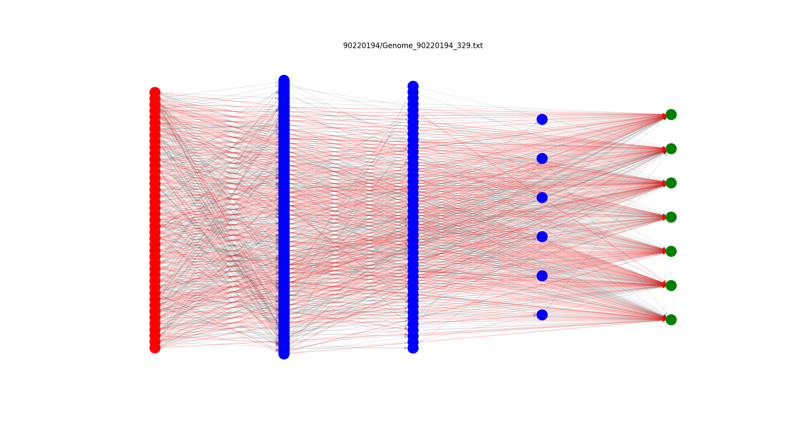

authors: Yerso Checya Sinti, Julian Roth
Starting this project, we wanted to build our frist Android app.
Our initial development has been for the command line though and some features are only available in the command line version.
We implemented the popular board game "Four In A Row" and created a bot, which used Minimax and
Alpha-beta pruning. The Desktop version also uses multi-threading to speed up the bots computation.
A detailed explanation of our Minimax implementation and our board evaluation function can be found here.
The Minimax algorithm is sufficient to beat most human players, if the computer is calculating at least 8 plies into the future.
However, it can still be defeated. Hence, we tried to create a stronger bot by implementing NEAT, a genetic algorithm.
Each genome is a fully connected neural network with 42 input neurons (= number of game board entries) and 7 output neurons (= columns in which tile can be placed).
The genomes play against a short-sighted Minimax bot. Throughout the training process the network grows and might eventually look like:

Although we have tried different starting positions, the NEAT algorithm wasn't able to generalize or learn useful strategies.
There are simply too many weights in the neural network, which hinders the convergence of the genetic algorithm to a good bot.
Therefore this type of opponent hasn't been implemented in the Android app.
For a more detailed documentation of our project please check out the project's GitHub page.